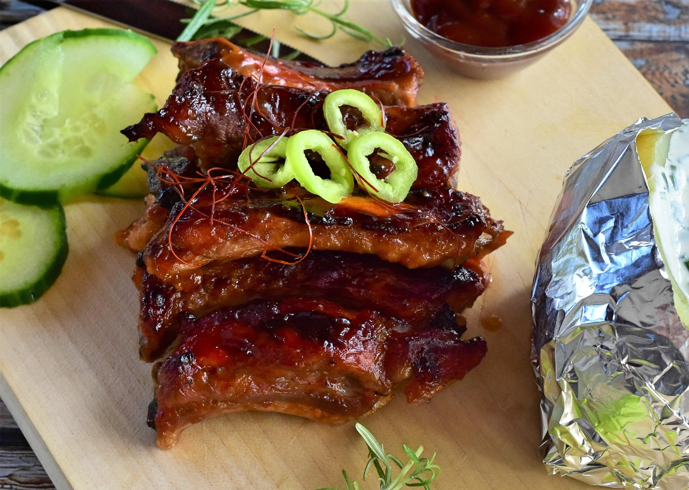

BBQ Ribs

Discription
This recipe is perfect for a crowd and will be the first thing to run out on the table. When theres no access to a smoker or a grill; this is the best way to get tender, fall off the bone ribs. A mix of the classic BBQ rib flavor and chinese five spice gives a refreshing new taste to a well known dish!
Ingredients
Ribs
For the Rub
- 2 tbsp rown sugar
- 2 tsp salt
- 2 tsp smoked paprika powder
- 2 tsp garlic powder
- 1 tsp onion powder
- 1/4 tsp ground ginger
- 1/4 tsp chinese five spice
- 1/4 tsp white pepper
For the Glaze
- 1/3 cup brown sugar
- 10-12 garlic cloves- minced
- 1/2 cup rice vinegar
- 1 1/2 cups tomato ketchup
- 1 tbsp grated ginger
- 1 tsp salt
- 1 tsp white pepper
- 1 tsp red pepper flakes
Instructions
- Remove the membrane on the back of the ribs- using a paring knife to loosen it and then pulling it off with your fingers
- Preheat oven to 275 degrees fahrenheit
- Combine Rub mixture. Pat ribs dry using a paper towel then coat all sides of ribs with rub mixture.
- Wrap the ribs tightly with aluminum foil and place them on a large baking sheet. Then place in oven to bake (depending on the type of ribs it may take 2-3 hours to cook until tender in the oven)
Home